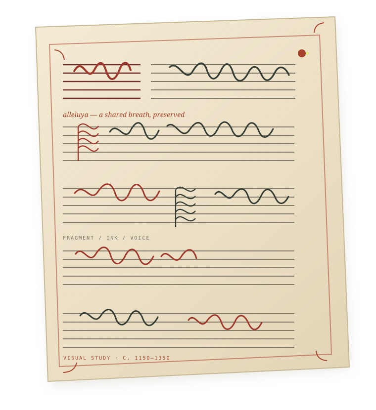
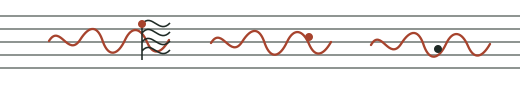

01 / MATERIAL TRACES
Recover what
Recover what
survives.
Reconstructing fragmentary artefacts to understand the books, practices and communities behind the music.
A research project at Maynooth University
Before music became a page, it belonged to people. We follow the traces of their shared voices across medieval Britain and Ireland.
Explore the collection

SCROLL TO EXPLOREA history heard in more than one voice.
Search the traces that make a song.
This working catalogue demonstrates how a composition, its surviving manuscript witnesses and a scholarly edition can remain distinct while still being read together.
10 records in the pilot collection
Prototype data — no external records are queried.
No records match those filters. Try a title, shelfmark, language or notation type.
A culture changes when it writes its music down.
The manuscripts that survive are partial, dispersed and full of clues. BROKENSONG asks what they can tell us about the people who made music together—and what gets changed when sound becomes script.
Follow the fragmentsBROKENSONG studies how polyphonic music was written, shared and reshaped in medieval Britain and Ireland—a period when books devoted to polyphony begin to proliferate.
Reconstructing fragmentary artefacts to understand the books, practices and communities behind the music.
Connecting works that offer no easy clues to the people, places or groups that brought them into being.
Combining musicology, manuscript studies, digital methods and practice-based research to imagine how these works might have lived.
Not one author. Not one voice.
Music is made
between us.
BROKENSONG brings together scholars of music, manuscripts and medieval culture at Maynooth University.
Principal investigator
Postdoctoral researcher
Postdoctoral researcher
PhD student
Research assistant
BROKENSONG is a five-year research project funded by a European Research Council Consolidator Grant and based at Maynooth University, Ireland.
Maynooth University · Department of Music